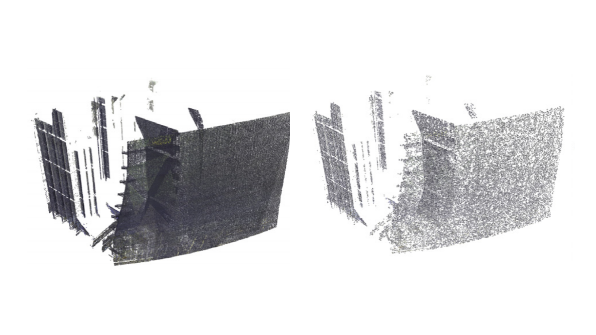
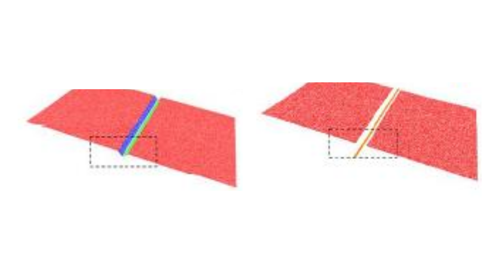
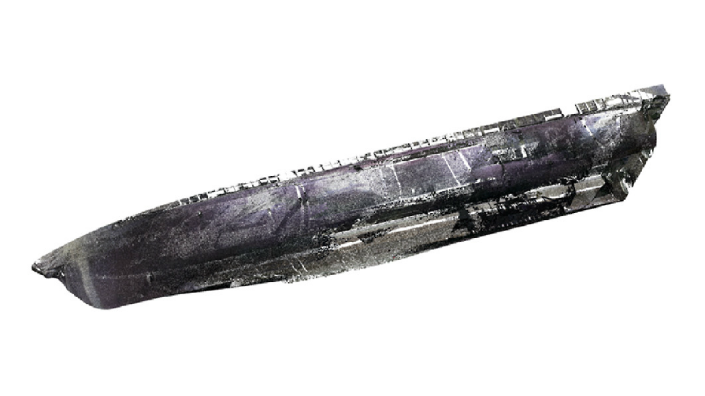
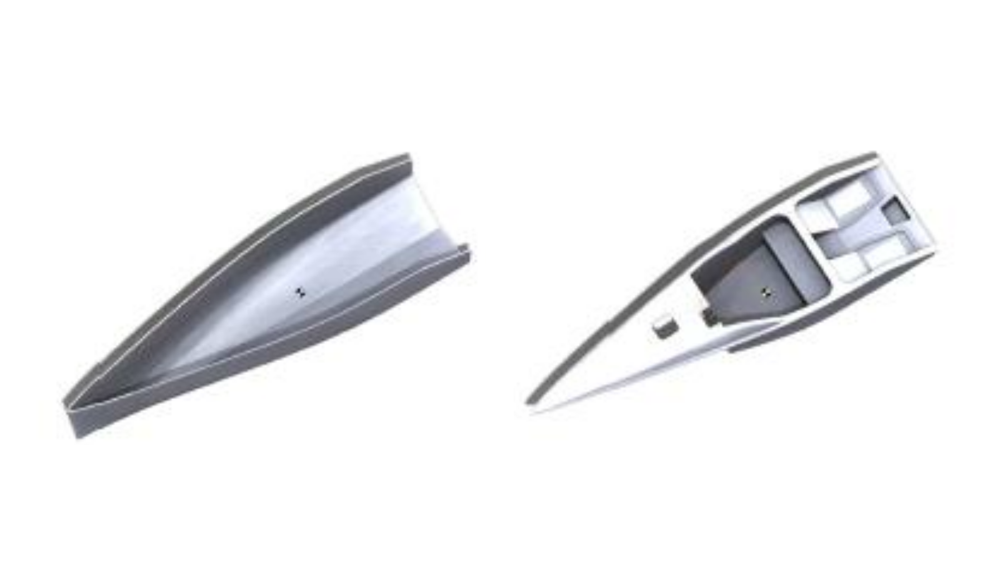
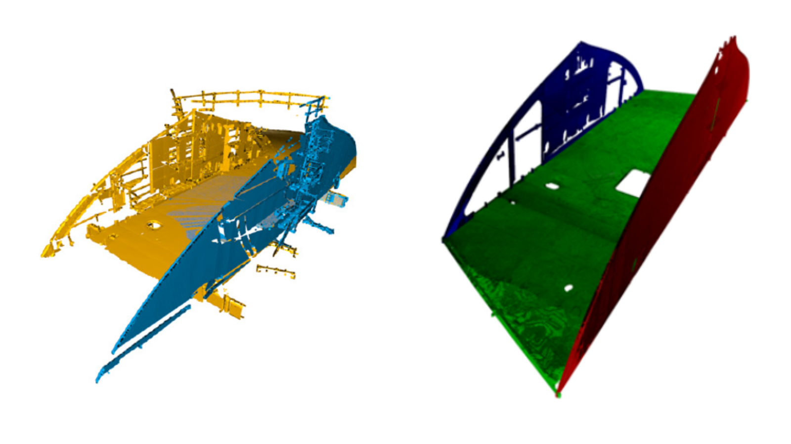
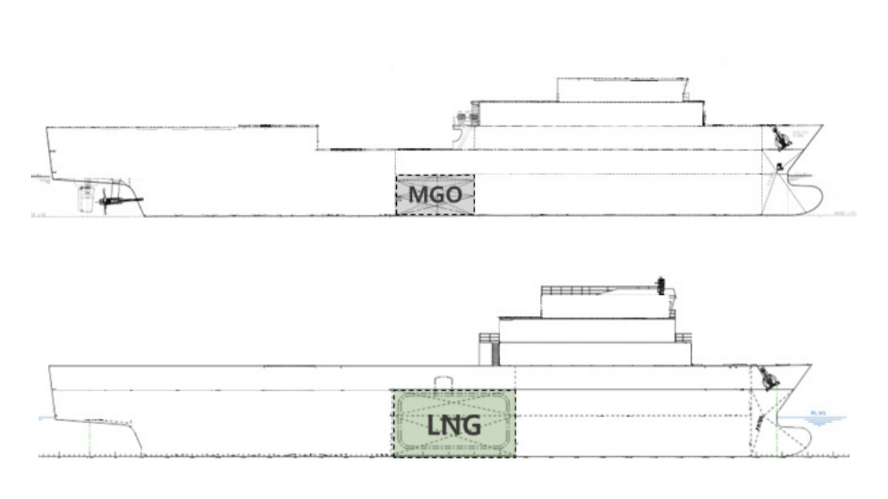
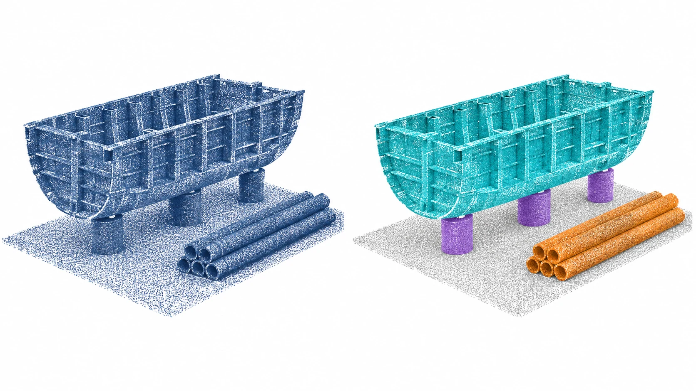

OPTLab Research Evidence
Validated 3D data
research foundation.
The Optimized Ship Production Technology Laboratory at Mokpo National Maritime University in South Korea has conducted long-running research in 3D scanning, point-cloud processing, deep-learning object recognition, quality inspection, reverse engineering, Physical AI, and collaborative robot execution data for shipbuilding and offshore manufacturing sites.
Research Lab
OPTLab at Mokpo National Maritime University in South Korea
The Optimized Ship Production Technology Laboratory combines naval architecture, ocean engineering, and production management to pursue practical research in 3D scanning, point-cloud-based digital quality control, deep-learning-driven smart-yard production automation, eco-friendly small vessels, and electric propulsion platform design.
- Field scan data, CAD references, and inspection criteria are connected to quality decisions, reverse engineering, and process improvement data.
- Point-cloud AI, production-system simulation, additive manufacturing, collaborative robotics, and Physical AI execution data are treated as one applied research stack.
Research Tracks
Technical foundation
OPTLab research connects field scanning, point-cloud AI, quality inspection, reverse engineering, and Physical AI execution data.
3D Scan & Quality Control
Deviation analysis, flatness measurement, GD&T validation, and process improvement for small vessels, FRP molds, ship blocks, and LNGC cargo holds.
Point Cloud AI
Scaffolding detection in LNGC cargo holds, semantic segmentation of shipyard datasets, 3D object recognition accuracy analysis, and large-scale point-cloud reduction.
Reverse Engineering & DfM
Scan-based CAD reconstruction, DfM for eco-friendly small vessels, topology optimization, and additive manufacturing for outfitting parts and jigs.
Robot & Physical AI
Collaborative robot paths, collision checks, 3D vision conditions, weld-line extraction, and transport workability in point-cloud ship block environments.
Representative Cases
Applied research cases
Applicability verification of object detection and segmentation for large ship blocks
Research commissioned by Samsung Heavy Industries to verify the field applicability of object detection and segmentation in large ship-block point clouds, connecting dataset preparation, AI model application, and result visualization.
ship block / object detection / semantic segmentation3D scanning and deviation analysis for small vessels and FRP molds
Field data from small vessel builders and mold manufacturers was used to validate dimensional control and process improvement opportunities.
3D scanning / deviation map / mold quality3D point-cloud object detection for LNGC cargo holds
For HD Hyundai Samho LNGC cargo-hold flatness measurement, deep-learning point-cloud processing and post-processing were applied to detect and separate unnecessary scaffolding systems.
object detection / segmentation / quality inspectionShip block virtual assembly and GD&T validation
Daehan Shipbuilding ship blocks were laser-scanned to build digital models, virtual alignment workflows, assembly deviation checks, and design accuracy reviews.
block scanning / virtual assembly / GD&TShipyard 3D deep-learning datasets and spatial post-processing
Research expanded into semantic segmentation, FPFH and TDA feature enhancement, large-scale point-cloud reduction, and support installation accuracy checks.
dataset / semantic segmentation / spatial post-processingDeep-learning spatial recognition automation module for container ship cargo holds
For HD Hyundai Samho container ship cargo holds, a module concept was applied to recognize structures and working spaces in 3D point clouds, organizing object segmentation, spatial relationships, and inspection or work criteria into automation-ready data.
container cargo hold / spatial recognition / automation modulePhysical AI-based collaborative robot workability and weld-line extraction
Ship-block point clouds, 3D vision sensors, and 3D-printed test pieces were connected to validate robot paths, collision checks, and weld-line or surface extraction data.
physical AI / robot path / 3D vision / weld-line extractionAcademic Papers
Research Output
Explore research from the past five years through figures and short summaries. Selected panels are rearranged for the web, preserving the original point clouds and analysis results.
Publication
Paper figure
Research overview

From AI segmentation to support inspection
The study combines AI segmentation with spatial post-processing to isolate supports and estimate their centers and installation heights. Position comparison was validated against a synthetic reference layout.
Inspection of ship block support installation accuracy using 3D point-cloud object detection and spatial data post-processing algorithms
Left: original point cloud · Right: TDA reduction
Point-cloud reduction guided by shape structure
Topological data analysis (TDA) guides ship-block point-cloud reduction. The study examines preservation of surface geometry, local features and spatial distribution.
Large-scale 3D point-cloud simplification and quality analysis of ship blocks based on topological data analysis
Left: plane extraction · Right: intersection line (detail)
Finding V-groove weld lines in point clouds
The study investigates V-groove weld-line detection through plane extraction and intersection-line calculation, comparing vision-sensor measurement characteristics in controlled indoor tests.
V-groove weld line detection using 3D point clouds and vision sensor performance analysis
Geometry-aware data reduction for AI training
The study combines Fast Point Feature Histograms (FPFH) with downsampled data and examines their effect on shipyard object detection. The right panel shows extracted feature points, not the complete training dataset.
Shipyard 3D deep-learning dataset simplification and object detection performance analysis using FPFH-based geometric feature augmentation
Separated hull point cloud
From vessel scans to volume and gross tonnage
Vessel scans are processed to estimate enclosed volume and compared with conventional gross-tonnage calculations, exploring the feasibility of a digital ship-inspection workflow.
A case study on the introduction of an advanced ship inspection method: Gross tonnage measurement 3D point clouds
Left: hull · Right: deck reverse-engineering model
Connecting reverse engineering with sustainable design
A scanned composite small craft is reverse-engineered and used to evaluate material and production alternatives through life cycle assessment, connecting geometry with environmental impact.
Environmental impact assessment and sustainable design application using a 3D scanning-based reverse engineering model for composite small vessels
Understanding shipyards with lightweight point clouds
The study varies point-cloud density and evaluates deep-learning object detection on experimental and shipyard datasets, examining the balance between data size and detection while identifying confusion between similar objects.
Analysis of Object Detection Accuracy Based on the Density of 3D Point Clouds for Deep Learning-Based Shipyard Datasets
Left: scan registration · Right: plane recognition
Preparing scans for inspection through registration and plane recognition
Open-source algorithms are examined for ship-block scan cleaning, registration, segmentation and plane recognition, including limitations of clustering in complex geometry and the need for learning-based segmentation.
Point-cloud post-processing methods and applications using open-source algorithms for ship-block 3D scan data
Top: MGO arrangement · Bottom: LNG dual-fuel arrangement
Sustainable design considering fuel and arrangement
Life cycle assessment compares fuel and LNG tank-arrangement alternatives for a medium-sized vessel, bringing environmental impact into the basic-design stage.
Life cycle assessment analysis for sustainable basic design alternatives of LNG dual-fuel medium-sized vessels
Top to bottom: mock-up, mold and hull deviation maps; consult the paper for quantitative interpretation
Tracking shape deviation from mock-up to hull
Scans of the mock-up, manufacturing mold and formed hull are compared with design geometry, proposing digital quality control through color-mapped deviations at successive production stages.
A case study for 3D scanning-based quantitative quality control during key stages of composite small craft production
Left: input point cloud · Right: object grouping — AI-generated concept
Foundations of learning directly from point clouds
This review explains PointNet and RandLA-Net, providing technical foundations for feature extraction from unordered point sets and large-scale point-cloud segmentation.
PointNet and RandLA-Net object detection methods using 3D point-cloud data